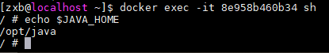

容器系列（二）：Docker-compose环境准备
文章目录
1. 安装docker-compose
docker-compose 依赖于 docker engine ，在安装 docker-compose 前应先安装好 docker 。
2. 网络通讯
在不指定 network 的情况下， docker-compose 中的容器会加入默认 network ，容器之间可以互相通讯，并且可以使用 service_name 作为域名访问其它容器。
|
|
xxl-job依赖于dm7，它访问dm7时只需要使用 service_name
dm7访问数据库。
其实，compose 中也支持设置 Host ，不过在 compose 中可不太好获取容器 IP 。
|
|
3. 服务依赖
docker-compose 中定义了很多服务，但是服务之间是存在依赖关系的。参考官方文档
docker-compose 中可以通过 depends_on 控制服务的启动或停止顺序，但是A容器启动时并不会一直等待它依赖的B容器服务完全启动好（可提供服务），它只是在B容器服务后面启动而已。
为了解决这个问题，有几种方式：
- 上层服务添加重连机制：比如说依赖的数据库还未准备好，但是程序会定时重连直至成功。
- 上层服务中添加启动检查：在上层服务中添加逻辑检查其依赖服务是否启动好，比如说检测端口是否可用。
上面提到的 上层服务中添加启动检查 ，常见的方式是给容器启动命令添加一个包装脚本。比较常见的有端口检测或自定义脚本检测。
端口检测：可以直接使用 wait-for-it 、 wait-for 、dockerize 等脚本。例如：
1 2 3 4 5 6 7 8 9 10 11version: "2" services: web: build: . ports: - "80:8000" depends_on: - "db" command: ["./wait-for-it.sh", "db:5432", "--", "python", "app.py"] db: image: postgres自定义脚本检测：大部分情况下可能端口检测已经够用了，但是有些服务在绑定监听端口后可能并不能立即提供服务，典型的如 Apollo configservice ，此时建议采用自定义脚本，自己编写逻辑探测服务是否启动。例如检测 postgres 是否可用：
wait-for-postgres.sh：
|
|
Dockerfile ：
1
|
command: ["./wait-for-postgres.sh", "db", "python", "app.py"] |
4. 资源限制
在 docker-compose 的 compose file version 3 中设置资源限制有所改变。参考文档
|
|
提示： compose file v3.7 中的资源限制只支持在 swam 下使用，独立使用 docker-compose 时不会生效。
在issue 4513中提到， docker-compose 在v3中不支持独立使用资源限制，但是他仍然在维护 v2 版本。
所以为了能独立使用 Resource Limit 功能，只需要将 compose file version 降低为较新的 v2.4 版本就行了。
|
|
5. 环境变量
环境变量有很多方式进行设置，且优先级不同。优先级情况如下：
- Compose file中定义
- Shell 环境变量
- env_file
- Dockerfile中ENV声明
1-4优先级从高到低
5.1 在Compose file中使用环境变量
可以在 shell 中定义环境变量，然后在 Compose file 中引用该变量。
Dockerfile：
|
|
docker-compose.yml：
|
|
启动容器后，发现可正常读取到设置的 host
5.2 environment设置环境变量到容器中
docker-compose.yml：
1 2 3 4 5 6 |
version: '2.4'
services:
env:
image: env
environment:
JAVA_HOME: /tmp |
Dockerfile：
1 2 3 4 5 6 |
FROM alpine:latest ENV JAVA_HOME /usr/local/java COPY entrypoint.sh /bin/ ENTRYPOINT [ "/bin/entrypoint.sh" ] |
compose 中的 environment 定义的环境变量会覆盖掉 Dockerfile 中定义的环境变量。
5.3 通过compose将shell定义的环境变量传到container中
可以在 compose 中将 shell 下定义的环境变量传到容器中。
shell：
|
|
compose file：
|
|

5.4 通过env_file传环境变量给容器
web-variables.env
1
|
JAVA_HOME=/zxb |
docker-compose.yml
|
|
运行容器后，正常输出环境变量
5.5 .env文件
可以创建 .env 文件，然后指定变量。 .env 中的变量可以在 compose 文件中使用。
.env：
1
|
IMAGE_NAME=env |
docker-compose.yml：
|
|
文章作者 张雄彪
上次更新 2019-09-29